In-plane and out-of-plane integration#
Warning: out-of-plane integration is often not rigorous#
With a single angle of incidence, it is impossible to fully cover the range of \(q_z\) at \(q_{xy}=0\) due to the limitations of measuring the Ewald sphere with a planar 2D detector [17].
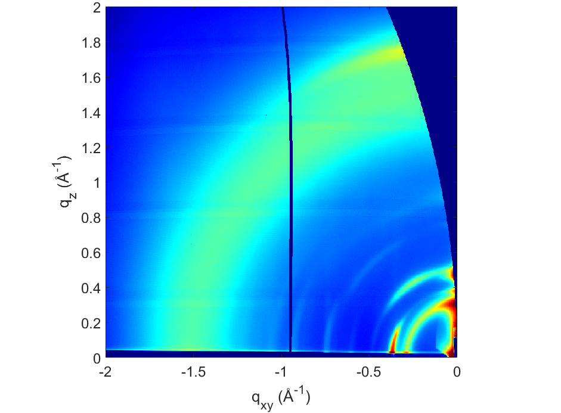
To rigorously obtain the out-of-plane region of reciprocal space at \(q_{xy}=0\), techniques such as X-ray reflectivity should be used.
An approximation often made is to ignore the corrections required by the Ewald sphere. In this case, note that comparisons between in-plane and out-of-plane integrations are mostly qualitative, particularly at high \(q_z\) values.
We will see different approaches here to obtain in-plane and out-of-plane integrations.
Integration directly in q-space#
In-plane#
Performing in-plane integration directly in q-space is possible, since there is only little corrections related to the Ewald sphere.
Initiate Integration: Click on the
ILS(Integrated Line Scan) icon.Draw the Integration Area: Draw a rectangle to define the integration region. Typically, this rectangle is positioned just above the Yoneda-Vineyard peak, near the critical angle of total external reflection.
To adjust precisely, right-click the rectangle and select
Set position.Keep the rectangle’s height consistent across samples for comparative purposes.
Ideally, report the integration domain in publications.
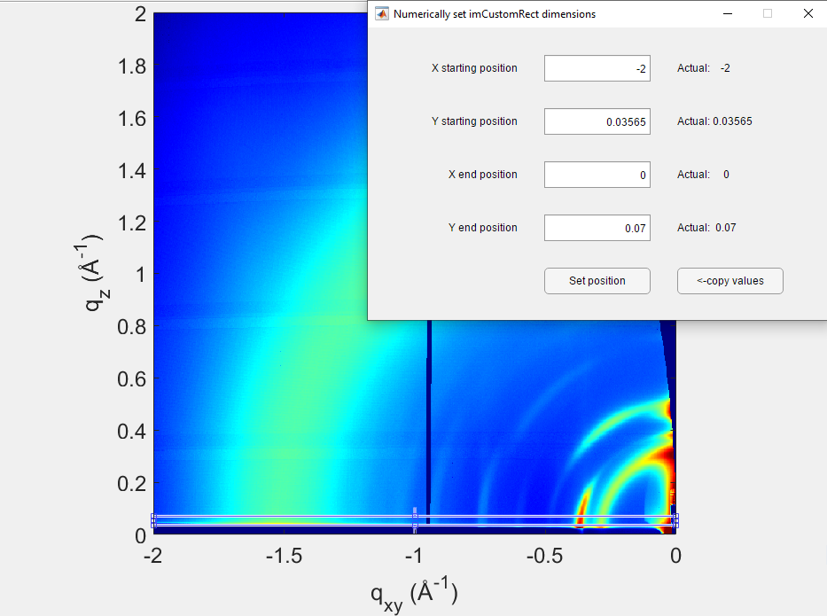
Update Data: In the
Integrated Line Scanwindow, click onUpdate Datato process the selected rectangle.
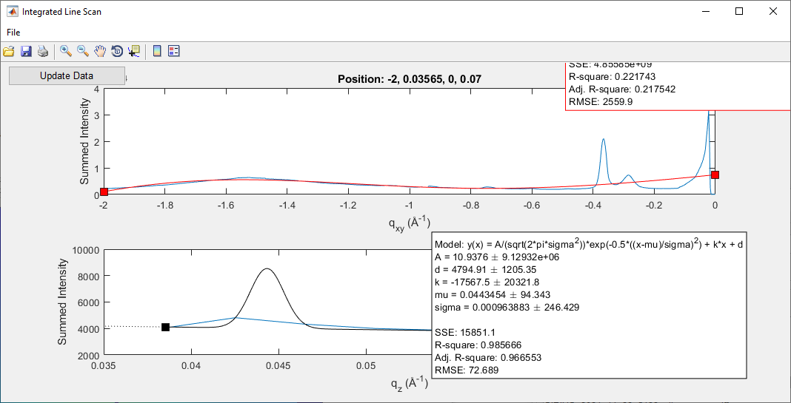
Export Data: If needed, fit the peak positions using GIDVis or export the data for external analysis.
Go to
File > Export Line Data....Select only
Sum vertically, then click onExport and Close.
The exported text file contains intensity as a function of \(q_{xy}\) in a two-column format. For this tutorial, the file was saved as 5151-5152-direct-integration-qxy.txt.
Out-of-plane#
Due to the missing wedge, the out-of-plane integration directly in q-space is limited to small \(q_z\) only. In our example, that would be up to \(\sim 6\) \(\rm{nm}^{-1}\).
Initiate Integration: Click on the
ILS(Integrated Line Scan) icon.Draw the Integration Area: Draw a rectangle to define the integration region. Typically, this rectangle is centered on the beamstop.
To adjust precisely, right-click the rectangle and select
Set position.Keep the rectangle’s height consistent across samples for comparative purposes.
Ideally, report the integration domain in publications.
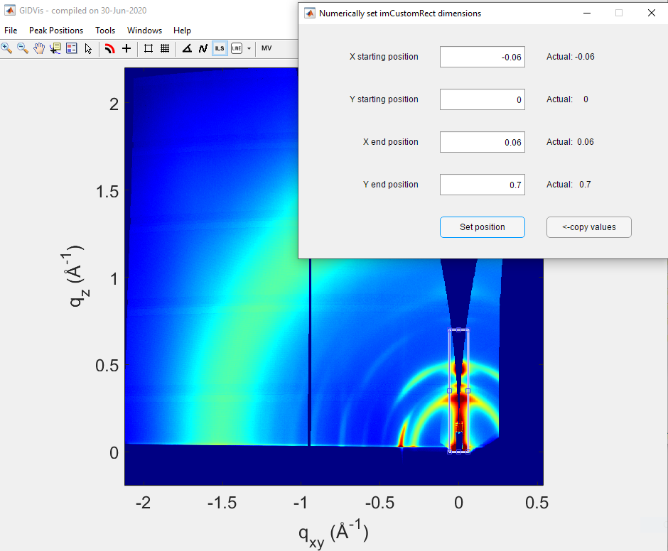
Update Data: In the
Integrated Line Scanwindow, click onUpdate Datato process the selected rectangle.
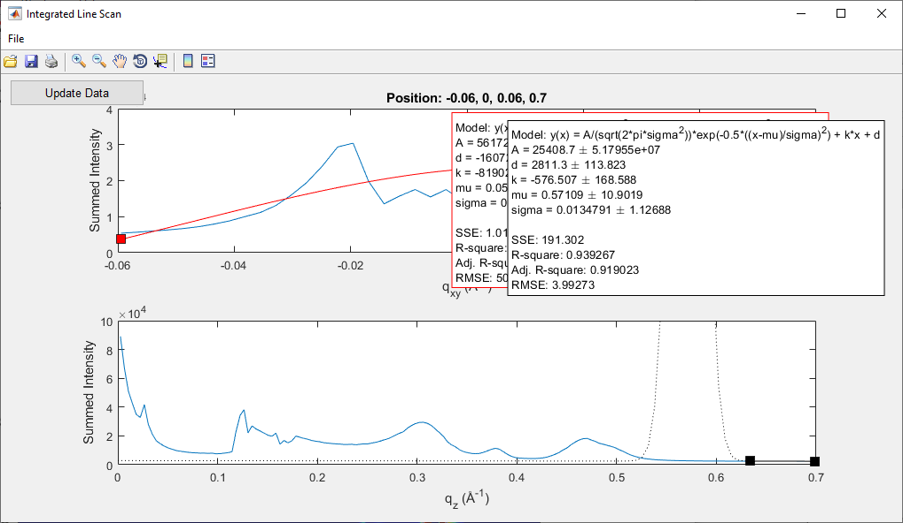
Export Data: If needed, fit the peak positions using GIDVis or export the data for external analysis.
Go to
File > Export Line Data....Select only
Sum horizontally, then click onExport and Close.
The exported text file contains intensity as a function of \(q_{z}\) in a two-column format. For this tutorial, the file was saved as 5151-5152-direct-integration-qz.txt.
In-plane and out-of-plane integrations from pixel-space#
As noted earlier, out-of-plane integrations are commonly performed without Ewald sphere corrections. However, this approximation should be explicitly mentioned in your publication [17].
Select the TIFF File: Use the original TIFF file, not the merged image (e.g.,
SIRIUS_2024_11_22_5151_pilatus_sum.tiff).Plot in Pixel Space: Display the image in pixel space. If the plot appears empty, click on
Fullin theToolboxwindow.Perform Integrations: Follow the same steps as above for in-plane or out-of-plane integrations.
In-plane#
In-plane integration can be done directly in q-space, but, as this is a tutorial, we will see how to recover it from pixel space as well.
Initiate Integration: Click on the
ILS(Integrated Line Scan) icon.Draw the Integration Area: Draw a rectangle to define the integration region. Typically, this rectangle is positioned just above the Yoneda-Vineyard peak, near the critical angle of total external reflection.
To adjust precisely, right-click the rectangle and select
Set position.Keep the rectangle’s height consistent across samples for comparative purposes.
Ideally, report the integration domain in publications.
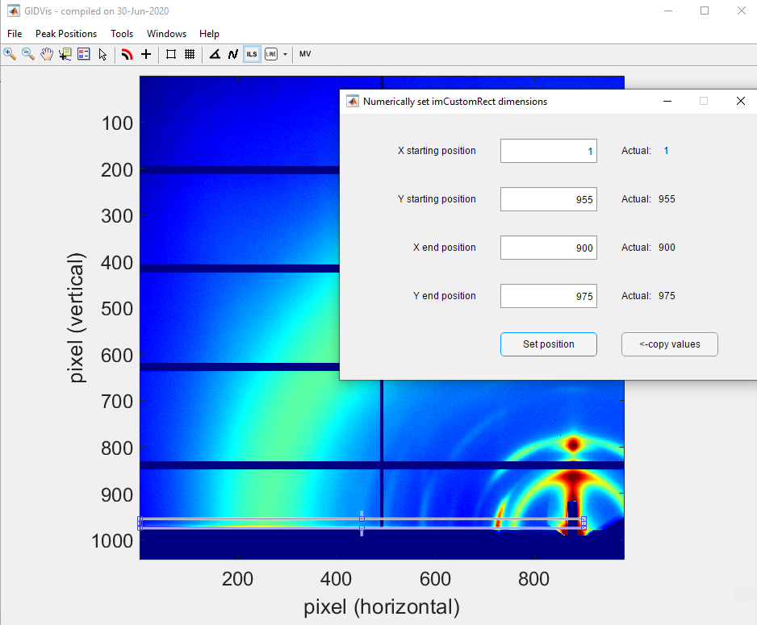
Update Data: In the
Integrated Line Scanwindow, click onUpdate Datato process the selected rectangle.
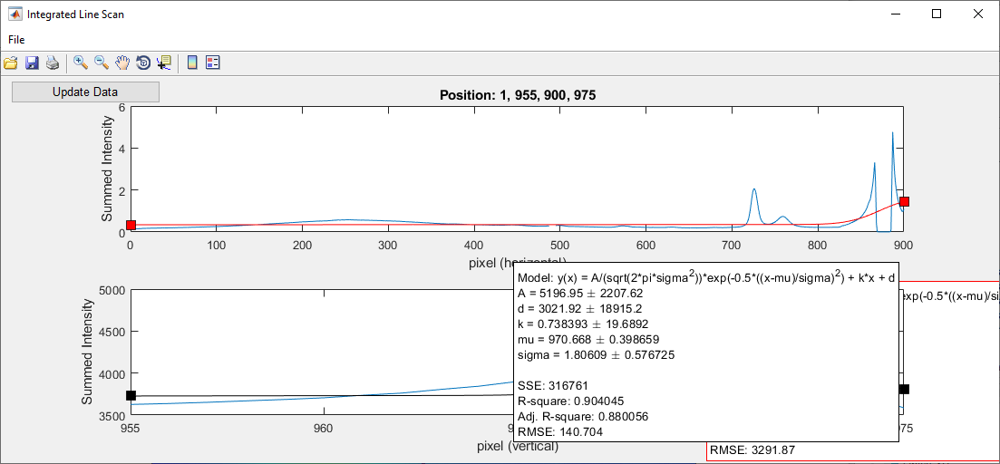
Export Data: If needed, fit the peak positions using GIDVis or export the data for external analysis.
Go to
File > Export Line Data....Select only
Sum vertically, then click onExport and Close.
The exported text file contains intensity as a function of the horizontal pixel number in a two-column format. For this tutorial, the file was saved as 5151-pixel-integration-horizontal.txt.
Out-of-plane#
Initiate Integration: Click on the
ILS(Integrated Line Scan) icon.Draw the Integration Area: Draw a rectangle to define the integration region. Typically, this rectangle is centered on the beamstop.
To adjust precisely, right-click the rectangle and select
Set position.Keep the rectangle’s width consistent across samples for comparative purposes.
Ideally, report the integration domain in publications.
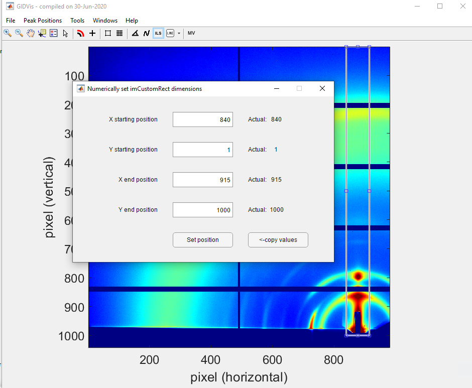
Update Data: In the
Integrated Line Scanwindow, click onUpdate Datato process the selected rectangle.
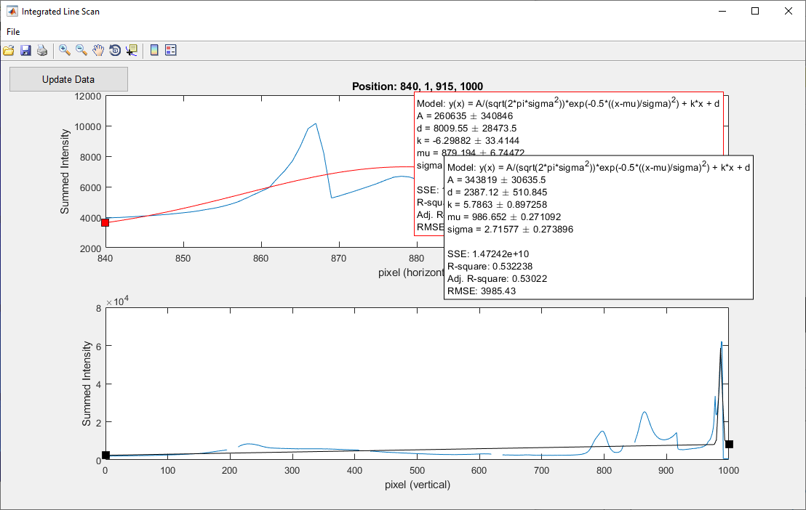
Export Data: If needed, fit the peak positions using GIDVis or export the data for external analysis.
Go to
File > Export Line Data....Select only
Sum horizontally, then click onExport and Close.
The exported text file contains intensity as a function of the vertical pixel number in a two-column format. For this tutorial, the file was saved as 5151-pixel-integration-vertical.txt.
Deal with the dead zones: Notice that a peak is missing around pixel 830 due to a dead zone in the detector. The same procedure should then be repeated with the exact same rectangle for the other detector angle, in this case using the file
SIRIUS_2024_11_22_5152_pilatus_sum.tiff.
For this tutorial, the resulting file was saved as 5152-pixel-integration-vertical.txt.
Conversion to q-space#
Now, you need to convert the pixel-space profiles to q-space using the following approximated formulas, not taking into account the corrections due to the Ewald sphere.
\(q_{xy}\)#
where, for each pixel with horizontal coordinate \(x\), the angle \(2\theta\) is given by:
Here, \(\rm{pos\_direct\_x}\) represents the position of the direct beam on the rotated detector, and is calculated as:
where \(\delta\) is the in-plane angle of the detector, and \(D\) is the distance between the detector and the sample.
\(q_{z}\)#
where \(\alpha_f\) is calculated for each pixel with vertical coordinate \(y\) using the formula:
and \(\rm{pos\_direct\_y}\) is the position of the direct beam on the rotated detector, calculated as:
where \(\gamma\) is the out-of-plane angle of the detector, and \(D\) is the distance between the detector and the sample.
Example of conversion using Python#
Here is a step-by-step example of Python code to convert profiles from pixel space to q-space using the previously described formulae. The complete program can be found in the Jupyter Notebook conversion-pixel-q-space.ipynb, available here.
Below are the functions used to import and process the data:
import numpy as np
import matplotlib.pyplot as plt
def calculate_qxy(x, lambda_, pixel_size, pos_direct_x, D, PONI_x, delta):
# Calculate the position of the direct beam on the rotated detector
pos_direct_x = PONI_x - (D / pixel_size) * np.tan(np.radians(delta))
# Calculate the angle theta for each pixel with horizontal coordinate x
theta = np.arctan(pixel_size * (x - pos_direct_x) / D)/2.
# Calculate q_xy
qxy = (4 * np.pi / lambda_) * np.sin(theta)
return qxy
def calculate_qz(y, lambda_, pixel_size, pos_direct_y, D, PONI_y, gamma, alpha_i):
# Calculate the position of the direct beam on the rotated detector
pos_direct_y = PONI_y + (D / pixel_size) * np.tan(np.radians(gamma))
# Calculate the final angle alpha_f for each pixel with vertical coordinate y
alpha_f = np.arctan((pixel_size * (pos_direct_y - y)) / D) - np.radians(alpha_i)
# Calculate q_z
qz = (2 * np.pi / lambda_) * (np.sin(alpha_f) + np.sin(np.radians(alpha_i)))
return qz
# Function to load the data from a CSV file (one-line header, space-separated)
def load_data(file_path):
# Load the file with numpy, assuming it's space-separated and has a single-line header
data = np.loadtxt(file_path, delimiter=None, skiprows=1)
# The first column represents pixel values and the second column represents intensity values
x_values = data[:, 0] # Column 0 as pixel values
intensity_values = data[:, 1] # Column 1 as intensity values
return x_values, intensity_values
# Process data for q_xy or q_z
def process_file(file_path, lambda_, pixel_size, D, PONI_x, delta, PONI_y=None, gamma=None, alpha_i=None):
# Load the data from the file
pixel_values, intensity_values = load_data(file_path)
if gamma is None:
# Calculate q_xy for each pixel value
qxy_values = np.array([calculate_qxy(x, lambda_, pixel_size, 0, D, PONI_x, delta) for x in pixel_values])
# Combine the results
processed_data = np.column_stack((qxy_values, intensity_values))
else:
# Calculate q_z for each pixel value
qz_values = np.array([calculate_qz(y, lambda_, pixel_size, 0, D, PONI_y, gamma, alpha_i) for y in pixel_values])
# Combine the results
processed_data = np.column_stack((qz_values, intensity_values))
return processed_data
The parameters for the beamtime, using the same information you have set up in GIDVis, should be provided as follows:
# Parameters from the beamtime experiment
lambda_ = 1.24e-10 # Wavelength in meters
pixel_size = 172e-6 # Pixel size in meters
D = 0.35 # Distance between detector and sample in meters
PONI_x = 563.5 # Example value for PONI_x
delta = -8.7 # In-plane angle in degrees
PONI_y = 1015 # Example value for PONI_y
alpha_i = 0.12 # Incident angle in degrees
# Paths to files
# In-plane file
file_path_qxy = '5151-pixel-integration-horizontal.txt'
# First out-of-plane angle and file
gamma_1 = -0.75 # Out-of-plane angle in degrees
file_path_qz_1 = '5151-pixel-integration-vertical.txt'
# Second out-of-plane angle and file
gamma_2 = -1.4 # Out-of-plane angle in degrees
file_path_qz_2 = '5152-pixel-integration-vertical.txt'
You can see that the path to the profile along the horizontal direction of the detector is included. Additionally, the paths to the two profiles obtained at the two out-of-plane angles of the detector are specified, along with the corresponding angles at which they were measured.
Next, we process the files, convert them to the appropriate units, and save the results in .csv files, which can then be opened with any standard software.
# Process the files
processed_data_qxy = process_file(file_path_qxy, lambda_, pixel_size, D, PONI_x, delta)
processed_data_qz_1 = process_file(file_path_qz_1, lambda_, pixel_size, D, None, None, PONI_y, gamma_1, alpha_i)
processed_data_qz_2 = process_file(file_path_qz_2, lambda_, pixel_size, D, None, None, PONI_y, gamma_2, alpha_i)
# Convert q_xy to Å^-1 for q_xy, and make qxy > 0
processed_data_qxy[:, 0] = processed_data_qxy[:, 0] * 1e-10 * -1
# Convert q_z to Å^-1 for q_z
processed_data_qz_1[:, 0] = processed_data_qz_1[:, 0] * 1e-10
processed_data_qz_2[:, 0] = processed_data_qz_2[:, 0] * 1e-10
# Save the results to new files
np.savetxt('5151-processed-data-qxy.csv', processed_data_qxy, delimiter=';', header="q_xy(A^-1);Intensity", comments='', fmt='%f')
np.savetxt('5151-processed-data-qz.csv', processed_data_qz_1, delimiter=';', header="q_z(A^-1);Intensity", comments='', fmt='%f')
np.savetxt('5152-processed-data-qz.csv', processed_data_qz_2, delimiter=';', header="q_z(A^-1);Intensity", comments='', fmt='%f')
Plotting and comparing the results#
The code used for plotting the results is included in the accompanying Jupyter Notebook.
In-plane profiles: directly from q-space and after pixel-space conversion#
Here, we compare the results obtained via direct integration in q-space using GIDVis and those derived after conversion from pixel-space.
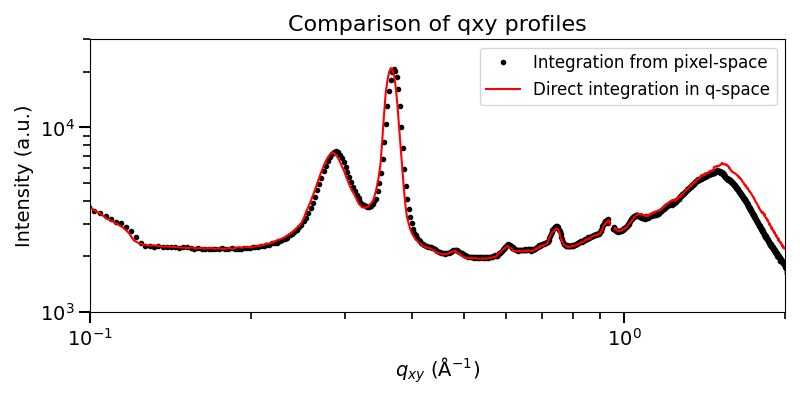
The results are quite similar, with differences primarily arising from slight variations in the integration domain between pixel-space and q-space.
Out-of-plane profiles from pixel-space conversion#
First, we compare the out-of-plane profiles obtained from two detector positions.
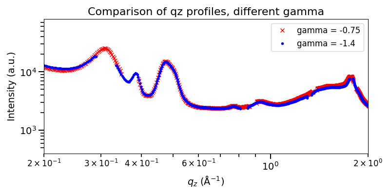
To address the missing peak at approximately 3.6 \({\rm nm}^{-1}\) in the curve at gamma = -0.75, we use the data measured at gamma = -1.4 to fill this gap.
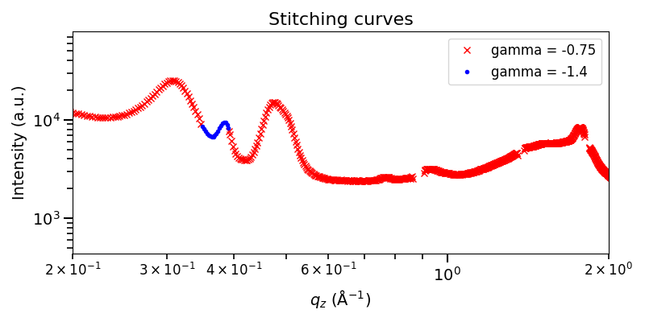
We stitch the data together and save the combined profile in the file 5151-5152-stitched-data-qz.csv.
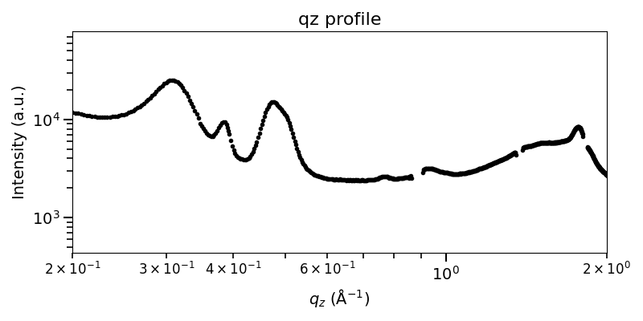
Comparison in-plane and out-of-plane profiles#
An insightful visualization compares the in-plane and out-of-plane profiles, which can reveal information about the sample’s organization (e.g., face-on versus edge-on orientation). However, a detailed interpretation of this type of plot is beyond the scope of this tutorial and is best suited for users with expertise in the specific system being measured.
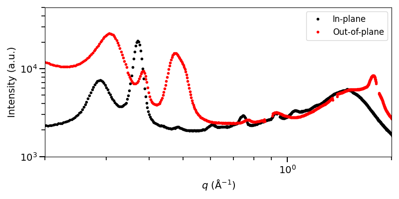